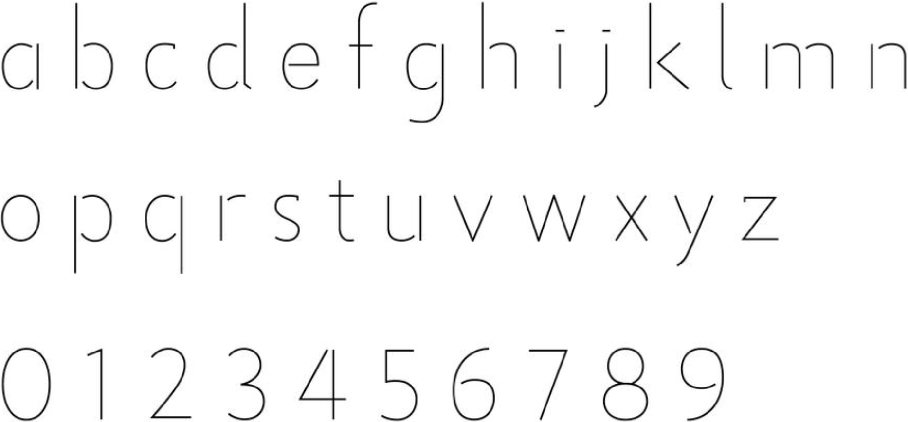
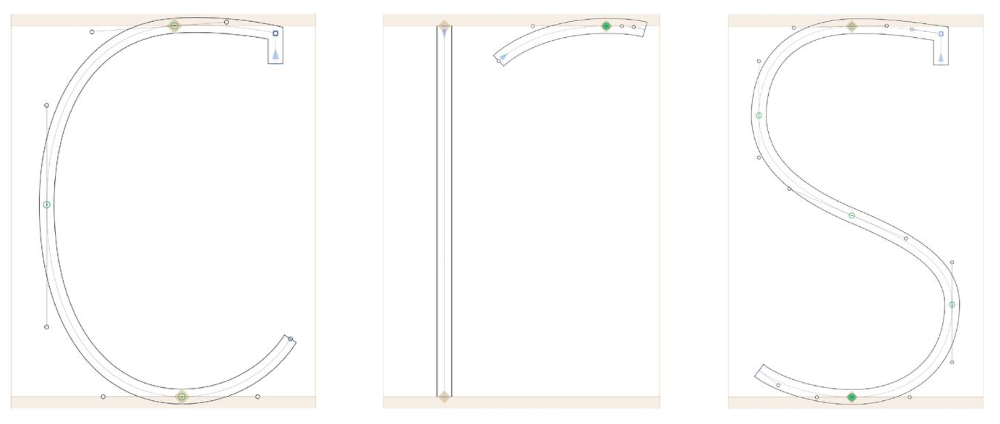
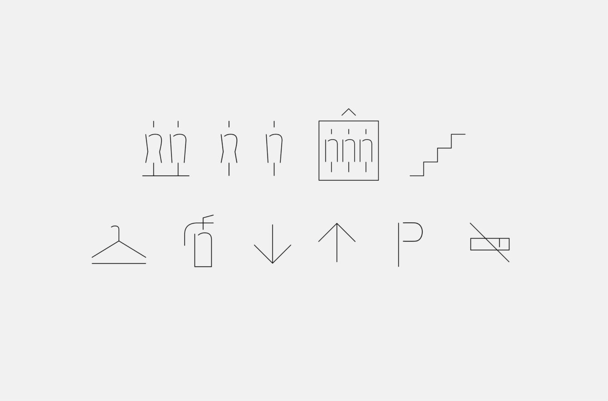
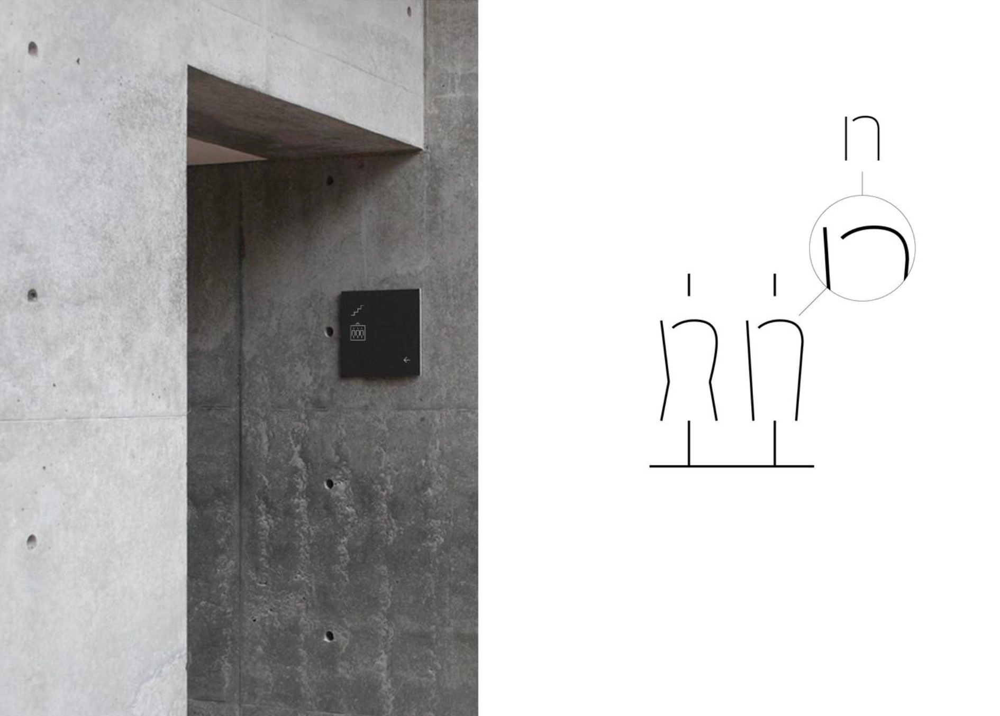
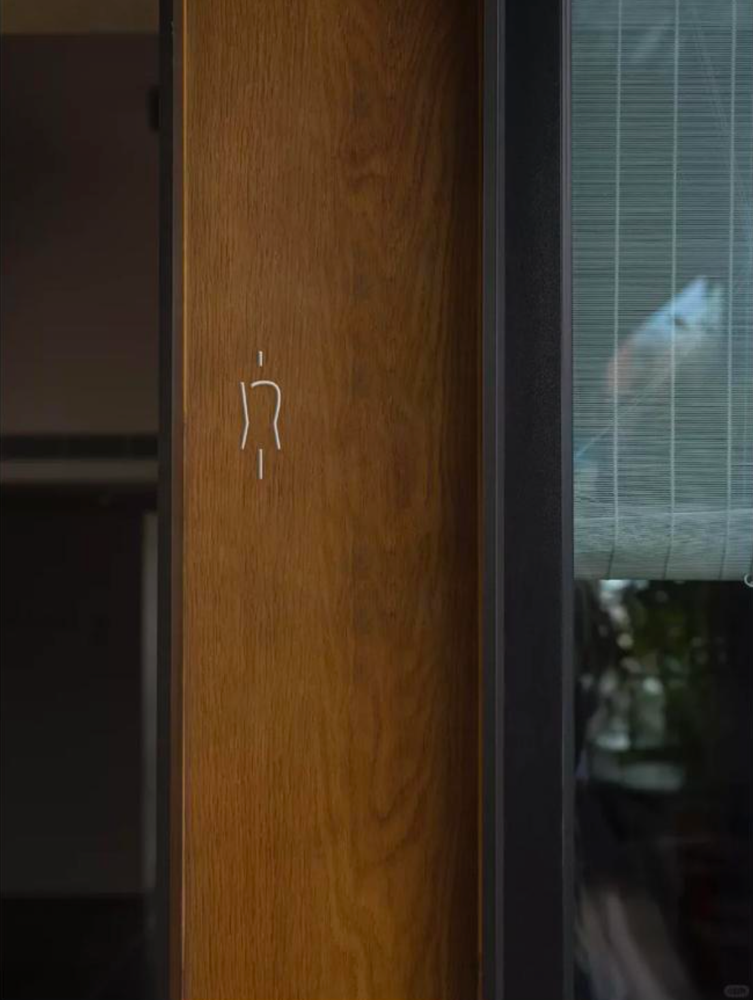
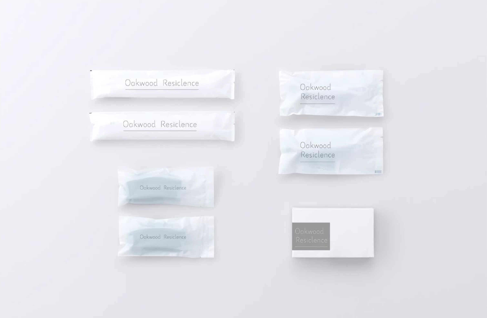

Oakwood Resiclence

Oakwood Resiclence
Bringing together the intimacy of home and the quiet attentiveness of hotel living, each residence is shaped through proportion, materiality, and natural light. The result is a calm, understated environment where light, texture, and order quietly enrich the everyday.
Comfort is found in thoughtful details. Service remains discreet, ever present but never intrusive. Every gesture is intentional, allowing each stay to feel effortless and instinctively lived in.

Oakwood Font


Oakwood Font is a lightweight sans-serif type system shaped to bring a quieter presence to the visual environment.
Guided by proportion, curvature, and the body's natural perception of form, each letter is drawn to support an effortless reading rhythm. Subtle openings at key junctions—most notably in characters such as b, d, and e—soften structural precision, allowing the typeface to breathe more naturally within its surroundings.
The result is a typographic voice that feels calm, understated, and quietly integrated into the spatial experience.



Signage
Designed with quiet clarity, the signage integrates naturally into the space, supporting intuitive wayfinding while preserving a calm atmosphere.
